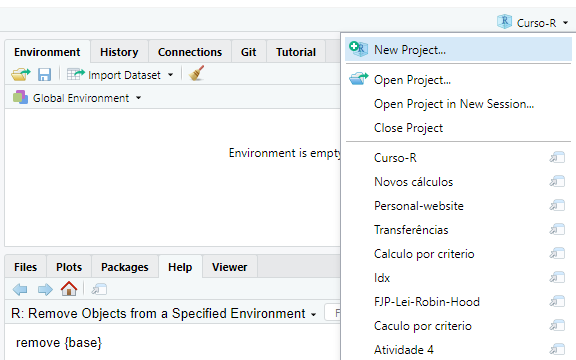
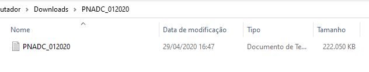
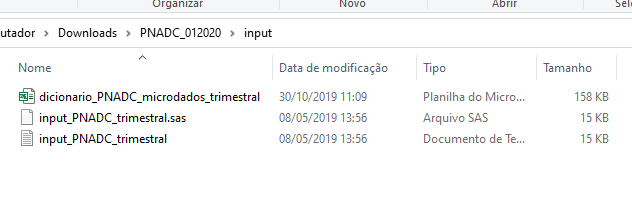
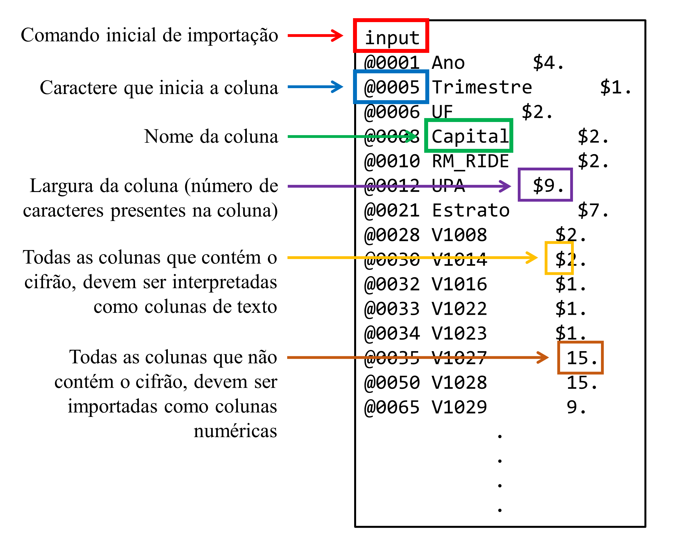

library(tidyverse)
library(readr)
library(readxl)
library(haven)4 Importando e exportando dados com readr, readxl e haven
4.1 Introdução e pré-requisitos
Para analisar os seus dados no R, você precisa primeiro importar esses dados para dentro do R. Neste capítulo, vamos aprender como utilizar as funções dos pacotes readr, readxl e haven, para ler e importar dados presentes em arquivos de texto (plain text files - .txt ou .csv), em planilhas do Excel (.xlsx) e em arquivos produzidos por programas estatísticos como o Stata (.dta), SPSS (.sav; .zsav e .por) e SAS (.sas).
Para que você tenha acesso as funções e possa acompanhar os exemplos desse capítulo você precisa chamar pelos pacotes readr, readxl e haven, através do comando library(). O pacote readr especificamente, está incluso dentro do tidyverse e, por isso, você também pode chamar por ele.
4.2 Fontes de dados
Os seus dados podem vir de vários tipos de fontes diferentes. Para citar alguns tipos bastante comuns de fontes de dados, temos:
Arquivos estáticos salvo no disco rígido de seu computador (e.g. CSV, Excel, etc.).
APIs (Application Programming Interface);
Bancos de dados (e.g. MySQL, Cassandra, MongoDB, PostgreSQL, etc.);
Arquivos fornecidos por um servidor (e.g. um página HTML);
Cada um desses tipos de fontes exigem técnicas ou métodos de importação diferentes entre si. Por exemplo, para importarmos dados de bancos de dados, nós precisamos criar uma conexão com o banco de dados, geralmente através de um driver ODBC (Open DataBase Connectivity). Como um outro exemplo, para coletarmos dados de uma API, nós geralmente precisamos enviar requisições HTTP para essa API.
Eu não espero que você entenda o que esses termos significam (ODBC? HTTP? …). O que eu realmente quero que você entenda aqui, é que você vai, em geral, utilizar pacotes e funções diferentes do R para importar os seus dados, a depender de onde, ou do tipo de fonte da qual você está extraindo esses dados. Por exemplo, para importar os seus dados de um banco de dados através do R, você geralmente vai utilizar as funções dos pacotes DBI e odbc. Por outro lado, para importar dados de uma API você geralmente vai utilizar as funções do pacote httr2.
Para mais, você vai perceber que os pacotes e funções utilizados dentro de um mesmo tipo de fonte, também podem variar. Por exemplo, ao longo desse capítulo, vamos mostrar métodos para se importar dados de arquivos estáticos salvos em seu computador. Porém, você vai perceber que os pacotes e funções utilizados são diferentes para cada tipo de arquivo estatíco. Ou seja, a função utilizada para importar uma planilha do Excel é diferente da função utilizada para importar um arquivos CSV, e assim por diante.
4.3 Arquivos estáticos
Arquivos estatícos são um método prático de se transportar dados entre computadores. Uma situação comum que mostra essa praticidade é: “o seu colega de trabalho precisa dos dados daquela planilha que só você tem no seu computador. Para isso, você pode salvar essa planilha, em um arquivo .xlsx, e enviar um email para esse colega com esse arquivo .xlsx em anexo. A partir daí, o seu colega pode baixar esse arquivo para o computador dele”.
Portanto, arquivos estatícos são os arquivos que você normalmente salva em seu computador. Todo arquivo estatíco possui uma extensão que define o tipo do arquivo estatíco que ele é. Por exemplo, planilhas do Excel são salvas em arquivos com extensão .xlsx ou .xls. Já arquivos CSV são arquivos com extensão .csv, e arquivos de texto padrão possuem extensão .txt.
Um detalhe característico desse tipo de fonte de dado, é que sempre que você for importar os dados de um arquivo estático para o R, você terá que coletar obrigatoriamente o endereço no disco rígido no qual esse arquivo está salvo atualmente. Vamos descrever em breve como coletar esses endereços. Mais especificamente na seção Definindo endereços do disco rígido no R.
4.4 Diretório de trabalho
A Linguagem R possui uma forte noção de diretórios de trabalho (WICKHAM; GROLEMUND, 2017, pp. 113). O diretório de trabalho (ou working directory) é a pasta de seu computador onde o R está atualmente enraizado, ou, em outras palavras, é a pasta para a qual o R está olhando atualmente.

Portanto, sempre que você estiver no R, ele vai estar necessariamente trabalhando com alguma pasta específica de seu computador. Será nessa pasta que o R vai inicialmente procurar pelos arquivos que você demanda, e também será nessa pasta que o R vai inicialmente salvar todos os arquivos que você pedir a ele que salve.
No RStudio, você pode identificar o seu diretório de trabalho atual na parte esquerda e superior do console, logo abaixo do nome de sua guia (Console), como mostrado na Figura 4.1. Repare abaixo, que no momento em que a foto presente na Figura 4.1 foi tirada, eu estava trabalhando com uma pasta de meu computador chamada Curso-R, que por sua vez, se encontrava dentro de uma pasta chamada Projeto curso R.
Além disso, você também pode descobrir o seu diretório de trabalho atual ao executar a função getwd() no console:
getwd()## [1] "C:/Users/Pedro/Documents/Projeto curso R/Curso-R"4.4.1 Um exemplo
Vamos supor que o meu diretório de trabalho atual seja a pasta Curso-R, a qual está dentro da pasta Projeto curso R. Se eu pedir por algum arquivo chamado frase.txt, o R vai procurar por esse arquivo dentro dessa pasta Curso-R:
readLines("frase.txt")## [1] "Aristóteles foi um filósofo da Grécia Antiga"Isso tem duas implicações muito importantes:
- o arquivo
frase.txtdeve estar dentro dessa pastaCurso-R, caso contrário o R não poderá encontrar esse arquivo; - temos uma maneira muito simples e poderosa de acessarmos qualquer arquivo que esteja presente na pasta
Curso-R, pois precisamos apenas do nome desse arquivo, como no exemplo acima;
Um ponto muito importante é que a extensão do arquivo (que traduz o tipo do arquivo estático) também faz parte do nome do arquivo. No exemplo acima, o arquivo se chama frase e possui a extensão .txt, logo, o nome do arquivo a ser fornecido ao R é frase.txt.
4.5 Definindo endereços do disco rígido no R
Portanto, o mecanismo de diretórios de trabalho apenas define onde o R vai olhar primeiro pelos arquivos que você pede. Entretanto, isso não te impede de acessar arquivos que se encontram em outros locais do seu computador. Porém, para acessar qualquer arquivo que esteja em uma pasta diferente do seu diretório de trabalho atual, você precisa obrigatoriamente fornecer o endereço completo até esse arquivo para o R.
4.5.1 Cuidados ao definir endereços
Alguns cuidados no R são necessários ao definir um endereço até um arquivo. Primeiro, endereços de seu disco rígido devem sempre ser fornecidos como textos (strings). Por isso, lembre-se de contornar o seu endereço com aspas duplas ou simples no R. Segundo, o Windows utiliza por padrão a barra inclinada à esquerda (\) para separar cada diretório presente no caminho até um certo arquivo. Todavia, a barra inclinada à esquerda possui um significado especial para o R.
Abordando especificamente o segundo ponto, você tem duas alternativas para contornar as particularidades das barras inclinadas utilizadas nos endereços de seus arquivos: 1) utilizar o estilo dos sistemas Mac e Linux, que utilizam a barra inclinada à direita (/) para separar os diretórios; 2) ou contornar o comportamento especial de uma barra inclinada à esquerda, com duas barras inclinadas à esquerda (\\). Ou seja, é como se essas duas barras \\ significassem apenas uma barra \ para o R. Eu particularmente prefiro utilizar o estilo dos sistemas Mac e Linux para resolver esse problema, pois ele incorre em um trabalho menor de digitação.
Por exemplo, eu tenho um arquivo chamado livros.txt localizado dentro da pasta Lista de compras, que por sua vez, se encontra dentro da minha pasta de Documentos do Windows. Segundo o padrão do Windows, o endereço até esse arquivo seria: "C:\Users\Pedro\Documents\Lista de compras\livros.txt". Porém, levando-se em conta os pontos que acabamos de abordar, nós poderíamos escrever esse endereço dos dois modos expostos abaixo:
livros <- read_csv("C:\\Users\\Pedro\\Documents\\Lista de compras\\livros.txt")
livros <- read_csv("C:/Users/Pedro/Documents/Lista de compras/livros.txt")
livros# A tibble: 4 × 3
Titulo Autor Preco
<chr> <chr> <dbl>
1 O Hobbit J. R. R. Tolkien 40.7
2 Matemática para Economistas Carl P. Simon e Lawrence Blume 140.
3 Microeconomia: uma Abordagem Moderna Hal R. Varian 141.
4 A Luneta Âmbar Philip Pullman 42.94.5.2 Endereços relativos e absolutos
Existem dois tipos de endereços do disco rígido que você pode fornecer ao R, endereços relativos e endereços absolutos. Endereços absolutos, são endereços que começam pelo disco rígido e vão até o nome do arquivo. Esse tipo de endereço é chamado de absoluto, porque ele aponta para um endereço único e absoluto de seu computador. Ou seja, não existe nenhum outro local de seu computador com este endereço.
Um exemplo de endereço absoluto é o endereço do arquivo livros.txt que fornecemos no exemplo da seção anterior (C:/Users/Pedro/Documents/Lista de compras/livros.txt). Este é um endereço absoluto pois ele começa pelo disco rígido C:/ e vai até o nome do arquivo livros.txt específico que desejamos ler.
Para coletarmos o endereço absoluto de um arquivo no Windows, podemos clicar com o botão direito do mouse sobre o arquivo de interesse, e selecionar a opção Propriedades. Uma caixa vai abrir em sua tela, contendo diversas informações sobre o arquivo em questão. Logo a sua frente, temos a seção chamada Local na parte inicial dessa caixa, onde podemos encontrar o endereço absoluto até a pasta onde o seu arquivo de interesse está localizado.
De outro modo, endereços relativos são endereços “relativos” a um ponto inicial. Esse ponto inicial é sempre o seu diretório de trabalho atual. Ou seja, todo endereço relativo sempre começa pelo seu diretório de trabalho atual. O comando readLines("frase.txt") que mostramos em uma seção anterior é um exemplo de uso de um endereço relativo. Pois nós fornecemos diretamente o nome do arquivo, logo, o R pesquisa por esse arquivo no diretório de trabalho atual.
Tendo isso em mente, sempre que você for construir um endereço relativo, identifique primeiro qual o seu diretório de trabalho atual, e, a partir desse diretório, pense em qual é o caminho restante para chegar ao arquivo que você deseja importar.
Vamos utilizar como exemplo, o conjunto de arquivos mostrados na Figura 4.2 que se encontram dentro de uma pasta chamada Dados. Perceba que essa pasta Dados está dentro de uma pasta Curso-R, que por sua vez está dentro de uma pasta Projeto curso R:

Vamos supor que o nosso diretório de trabalho atual fosse, por exemplo, a pasta Projeto curso R. Nesse caso, poderíamos fornecer um endereço relativo para qualquer um desses arquivos presentes na pasta Dados. Pois a pasta Dados se encontra dentro da pasta Projeto curso R. Em outras palavras, a pasta Dados é uma subpasta da pasta Projeto curso R.
Lembre-se, um endereço relativo possui como ponto inicial, o seu diretório de trabalho atual. Por isso, você sempre pode utilizar um endereço relativo para acessar qualquer arquivo que esteja dentro de seu diretório de trabalho, ou dentro de alguma de suas subpastas. No caso dos arquivos da pasta Dados, nós poderíamos fornecer o endereço "Curso-R/Dados/" para chegarmos a pasta Dados. Em seguida, precisaríamos apenas acrescentar o nome do arquivo de nosso desejo. Por exemplo, para ler o arquivo de nome covid.csv, o endereço resultante seria "Curso-R/Dados/covid.csv".
4.5.3 Wildcards em endereços do disco rígido
Ao fornecer endereços do disco rígido, você tem a opção de utilizar um wildcard. Temos dois wildcards comumente utilizados em endereços do disco rígido, que são o ponto final (.) e dois pontos finais (..). Ou seja, esses dois textos específicos possuem significados especiais em endereços do disco rígido, e podem ser utilizados em qualquer sistema operacional que você esteja (Mac, Windows, Linux, etc.).
O ponto final representa um apelido para o seu diretório de trabalho atual. Isso significa que, os endereços relativos "./Curso-R/Dados/convid.csv" e "Curso-R/Dados/convid.csv" são equivalentes. Já os dois pontos, se referem ao diretório anterior ao diretório atual. Por exemplo, o endereço "Curso-R/.." é equivalente ao endereço ".", isto é, ao diretório de trabalho atual.
Ou seja, o endereço "Curso-R/.." se refere à pasta anterior à pasta Curso-R. Como um outro exemplo, o endereço "src/writexml/../xml.cpp" se refere ao arquivo xml.cpp que está dentro da pasta anterior à pasta writexml, que nesse exemplo é a pasta src. Portanto, este endereço é equivalente à "src/xml.cpp".
Vale destacar que você pode empilhar um wildcard múltiplas vezes. Dessa forma, você consegue “subir” vários steps na árvore genealógica de pastas de seu computador, ou, em outras palavras, você consegue “andar várias pastas para trás”. Por exemplo, o endereço "../../../planilha_importante.xlsx" se refere à um arquivo chamado planilha_importante.xlsx que está a três pastas anteriores ao seu diretório de trabalho atual.
4.5.4 Qual tipo de endereço utilizar?
Segundo WICKHAM; GROLEMUND (2017), é recomendável que você evite endereços absolutos, especialmente se você trabalha em conjunto com outras pessoas em um mesmo projeto. Pois é muito provável que os computadores de seus parceiros de trabalho não possuem exatamente a mesma estrutura de diretórios que o seu computador.
Por isso, o ideal é que você sempre organize todos os arquivos referentes a um certo projeto ou a uma certa análise, dentro de uma pasta específica de seu computador. Dessa forma, você pode tornar essa pasta específica o seu diretório de trabalho no R, e a partir daí, fornecer endereços relativos até cada arquivo.
4.6 Plataforma de Projetos do RStudio
No R, você pode configurar o seu diretório de trabalho atual, através da função setwd(). Basta fornecer o endereço absoluto até a pasta com a qual você deseja trabalhar. Veja o exemplo abaixo, em que eu escolho a pasta de Documentos do Windows como o meu diretório de trabalho:
setwd("C:/Users/Pedro/Documents")Porém, esse não é um método recomendado de se configurar o seu diretório de trabalho, especialmente porque nós precisamos realizar essa configuração toda vez em que acessamos o R, sendo algo contraproducente. Por isso, WICKHAM; GROLEMUND (2017) caracterizam a plataforma de Projetos do RStudio, como uma forma mais adequada e eficiente de realizarmos essa configuração.

Ao criar um projeto no RStudio, você está apenas criando um arquivo com o nome desse projeto e que possui uma extensão .Rproj. Esse arquivo .Rproj funciona como um link até a pasta onde você o guardou. Dessa forma, ao acessarmos esse projeto no RStudio, o seu console já vai estar trabalhando com a pasta onde o arquivo .Rproj foi salvo. Em termos técnicos, toda vez que você acessar esse projeto, o RStudio vai automaticamente configurar essa pasta como o seu diretório de trabalho atual do R.
Para criarmos um projeto no RStudio, você pode acessar um pequeno menu localizado na parte superior e direita de sua tela, mostrado na Figura 4.3. Ao selecionar a opção New Project..., o seu RStudio vai abrir uma aba. Nessa aba, você vai selecionar como deseja criar o novo arquivo .Rproj. Caso você já tenha organizado todos os arquivos de seu projeto uma pasta específica, você pode selecionar a opção Existing Directory para salvar o arquivo .Rproj em uma pasta já existente. Por outro lado, caso você esteja iniciando o seu projeto do zero, você pode selecionar a opção New Directory para criar um novo diretório em seu computador, onde você vai guardar todos os arquivos referentes ao seu projeto.
Ao selecionar uma dessas opções, o RStudio também vai lhe questionar sobre o tipo desse projeto, ou dito de outra maneira, qual o tipo de produto que você busca gerar com esse projeto. Ou seja, se você está planejando construir um novo pacote para o R, é interessante que você selecione a segunda opção (R Package). Pois assim, o próprio RStudio vai automaticamente criar para você, os principais arquivos que um pacote do R precisa ter. Em geral, você vai selecionar a primeira opção (New Project) para criar um projeto padrão.
4.7 Importando arquivos de texto com readr
Arquivos de texto, também conhecidos como plain text files, ou flat files, estão entre os formatos de arquivo mais utilizados em todo o mundo para transportar e armazenar dados. Por isso é muito importante que você conheça esses arquivos e saiba reconhecê-los.
Um arquivo de texto, normalmente assume a extensão .txt, e contém apenas cadeias de textos ou cadeias de valores numéricos que são organizados em linhas. Apesar de simples, os dados armazenados podem ser organizados de diferentes formas em cada linha do arquivo. Por essa razão, um arquivo de texto pode assumir diferentes extensões que identificam o tipo de arquivo de texto ao qual ele pertence.
Em outras palavras, nós possuímos diferentes tipos de arquivos de texto, e a diferença básica entre eles, está na forma como os valores são organizados em cada linha do arquivo. Um dos tipos de arquivo de texto mais famosos é o arquivo CSV (comma separated file), que utiliza vírgulas (ou pontos e vírgulas como é o caso brasileiro) para separar os valores de diferentes colunas em cada linha do arquivo. Por isso, não basta que você identifique se o seu arquivo de interesse é um arquivo de texto, pois você também precisa identificar o tipo de arquivo de texto no qual ele se encaixa.
Para importarmos os dados presentes nesses arquivos, vamos utilizar as funções do pacote readr, que oferece um conjunto de funções especializadas em arquivos de texto. Logo abaixo, temos uma lista que associa os respectivos tipos de arquivos de texto a cada uma das funções desse pacote.
read_delim(): essa é uma função geral, que é capaz de ler qualquer tipo de arquivo de texto em que os valores estão delimitados por algum caractere especial.read_csv2(): lê arquivos CSV (comma separated file) que seguem o padrão adotado pelo Brasil e por alguns países europeus. Isto é, arquivos.txtou.csvonde os valores são separados por ponto e vírgula (;).read_csv(): lê arquivos CSV (comma separated file) que seguem o padrão americano. Isto é, arquivos.txtou.csvonde os valores são separados por vírgula (,).read_tsv(): lê arquivos TSV (tab separated values). Arquivos.txtou.tsvonde os valores são separados por tabulação (\t).read_fwf(): lê arquivos FWF (fixed width file). Arquivos.txtou.fwfonde cada coluna do arquivo possui uma largura fixa de valores.
Repare que o nome de todas as funções acima segue o padrão read_*(), onde a palavra presente no ponto * corresponde a extensão que identifica o tipo de arquivo no qual a função é especializada. Nós sempre iniciamos qualquer uma das funções acima, pelo endereço até o arquivo que desejamos ler. Como exemplo inicial, eu possuo um arquivo CSV chamado Censo_2010.csv, que se encontra dentro da pasta 6 - Importacao.
library(readr)
Censo_2010 <- read_csv2("Parte 1/6 - Importacao/Censo_2010.csv")## ‐‐ Column specification ‐‐‐‐‐‐‐‐‐‐‐‐‐‐‐‐‐‐‐‐‐‐‐‐‐‐‐‐‐‐‐‐‐
## cols(
## `Região metropolitana` = col_character(),
## `População residente` = col_double(),
## `População em área urbana` = col_double(),
## `População em área não urbanizada` = col_double(),
## `População em área isolada` = col_double(),
## `Área rural` = col_double(),
## `Aglomerado urbano` = col_double(),
## Povoado = col_double(),
## Núcleo = col_double(),
## `Outros aglomerados` = col_double(),
## `Código unidade` = col_double()
## )
Perceba no resultado acima que, a função read_csv2() nos reporta a lista de colunas que ela encontrou no arquivo (Column specification), e também, o tipo de dado que foi associado para cada uma delas. Por exemplo, a coluna Região metropolitana que foi encontrada no arquivo CSV, foi automaticamente associado com o tipo de dado character.
Este relatório é muito útil, pois você pode rapidamente identificar se alguma coluna de seu arquivo CSV não foi importada por algum motivo, ou ainda, se o tipo de dado que foi associado a essa coluna está incorreto. Por se tratar de uma variável categórica, o tipo character é, a princípio, um tipo de dado adequado para a variável Região metropolitana.
Agora, a partir daqui, eu não vou evitar mostrar esse relatório. Apenas com o objetivo de ser mais breve, e evitar ser muito repetitivo ao longo do livro. Mas lembre-se que, por padrão, sempre que utilizar as funções do pacote readr, elas vão produzir esse relatório automaticamente para você.
Além de tudo isso, perceba também no exemplo acima, que eu salvo o resultado da função read_csv2() em um objeto chamado Censo_2010. Isso é muito importante! Lembre-se sempre de salvar o resultado das funções read_*() em algum objeto. Pois tudo que a função read_csv2() faz é ler o arquivo Censo_2010.csv e encaixar o seu conteúdo em uma tabela (ou um data.frame) do R. Ou seja, em nenhum momento, a função read_csv2() se preocupa em salvar os dados que ela coletou do arquivo Censo_2010.csv, em algum lugar que podemos acessar futuramente.
É por esse motivo, que eu salvo a tabela gerada pela função read_csv2() em um novo objeto do R chamado Censo_2010. Pois dessa forma, eu posso acessar novamente os dados que coletamos do arquivo Censo_2010.csv, através deste objeto Censo_2010.
Censo_2010# A tibble: 2,013 × 11
`Região metropolitana` `População residente` `População em área urbana`
<chr> <dbl> <dbl>
1 Manaus AM 2106322 1972885
2 Homens 1036676 964041
3 Mulheres 1069646 1008844
4 Careiro da Várzea 23930 1000
5 Homens 12688 481
# ℹ 2,008 more rows
# ℹ 8 more variables: `População em área não urbanizada` <dbl>, …Mesmo que o arquivo Censo_2010.csv seja claramente um arquivo CSV, nós precisamos identificar qual o padrão que ele está adotando. Nos EUA, um arquivo CSV utiliza vírgulas (,) para separar os valores de cada coluna. Porém, pelo fato de nós, brasileiros, usarmos a vírgula para delimitar casas decimais em números reais, nós empregamos o padrão de um arquivo CSV adotado por alguns países europeus, que utilizam o ponto e vírgula (;) como separador.
Logo abaixo, temos as linhas iniciais do arquivo Censo_2010.csv e, podemos rapidamente identificar que esse arquivo utiliza o padrão europeu, pois os valores estão separados por ponto e vírgula (;). Por essa razão que eu utilizo a função read_csv2(), e não a função read_csv() para ler o arquivo.
Manaus AM;2106322;1972885;3011;;108160;;22266;;;30
Homens;1036676;964041;2018;;59024;;11593;;;30
Mulheres;1069646;1008844;993;;49136;;10673;;;30
Careiro da Várzea;23930;1000;;;21089;;1841;;;1301159
Homens;12688;481;;;11281;;926;;;1301159
Mulheres;11242;519;;;9808;;915;;;1301159Apesar de ser esse o padrão adotado por nós brasileiros, você enfrentará ocasiões em que o seu arquivo de texto possui separadores diferentes do esperado. Por exemplo, talvez os seus dados sejam separados por cifrões ($).
t <- "Ano$Código$Dia$Valor
2020$P.A22$01$4230.45
2020$B.34$02$1250.28
2020$S.T4$03$3510.90"Em casos como esse, você será obrigado a definir explicitamente o separador utilizado no arquivo. Para isso, você pode utilizar a função read_delim(), que possui o argumento delim, onde podemos determinar o caractere que delimita as colunas no arquivo.
read_delim(t, delim = "$")# A tibble: 3 × 4
Ano Código Dia Valor
<dbl> <chr> <chr> <dbl>
1 2020 P.A22 01 4230.
2 2020 B.34 02 1250.
3 2020 S.T4 03 3511.Como um outro exemplo, arquivos TSV são simplificadamente um arquivo CSV que utiliza um caractere especial de tabulação como separador, representado pelos caracteres \t. Ou seja, nós podemos recriar a função read_tsv() através da função read_delim(), ao configurarmos o argumento delim, como no exemplo abaixo.
t <- "Ano\tCódigo\tDia\tValor
2020\tP.A22\t01\t4.230,45
2020\tB.34\t02\t1.250,28
2020\tS.T4\t03\t3.510,90"
read_delim(t, delim = "\t")# A tibble: 3 × 4
Ano Código Dia Valor
<dbl> <chr> <chr> <dbl>
1 2020 P.A22 01 4.23
2 2020 B.34 02 1.25
3 2020 S.T4 03 3.514.7.1 Definindo os tipos de dados em cada coluna
As funções read_*() vão sempre, por padrão, ler as 1000 primeiras linhas de seu arquivo, e com base nelas, a função vai tentar adivinhar qual o tipo de dado contido em cada coluna. Após esse processo, em que a função read_*() escolhe um tipo de dado para cada coluna, a função lê as linhas restantes do arquivo, se baseando nesses tipos de dados identificados por ela. No relatório produzido pela função com as especificação de cada coluna (Column specification), podemos ver justamente qual foi o “chute” da função, ou qual o tipo de dado que a função utilizou para ler os dados de cada coluna.
Veja no exemplo abaixo, que a função read_csv() interpretou que as colunas Título e Autor continham dados em texto e, por isso, utilizou colunas do tipo character (col_character()) para ler e armazenar esses dados. Por outro lado, a função percebeu que a coluna Preço continha dados numéricos e, por essa razão, preferiu utilizar uma coluna do tipo double (col_double()) para alocar esses dados na tabela.
livros <- read_csv("C:/Users/Pedro/Documents/Lista de compras/livros.txt")-- Column specification -----------------------
cols(
Título = col_character(),
Autor = col_character(),
Preço = col_double()
)Isso é uma característica importante e útil das funções read_*(), pois podemos contar na maioria das vezes com essa detecção automática da função. Porém, quanto maior for o tamanho de seu arquivo, mais frágil se torna esse sistema. Pois essas 1000 primeiras linhas começam a representar uma parte cada vez menor do arquivo e, portanto, as suas chances de demonstrarem fielmente os tipos de dados presentes em todo arquivo, ficam cada vez menores.
Por isso, é provável que em algum momento, você terá de contornar esse comportamento padrão, e definir explicitamente os tipos de dados que você deseja utilizar para ler cada coluna de seu arquivo. Este controle é feito por meio do argumento col_types de qualquer função read_*(). Para construirmos essa definição, nós utilizamos a função cols() e suas variantes col_*(). Dentro da função cols(), precisamos igualar o nome da coluna presente no arquivo de texto à função col_*() que corresponde ao tipo de dado que desejamos utilizar nessa coluna.
No exemplo abaixo, ao igualar as colunas year, month e day à função col_integer(), eu estou definindo que essas colunas devem ser interpretadas como colunas do tipo integer. Ao mesmo tempo, ao igualar as colunas carrier e tailnum à função col_character(), eu estou requisitando que essas colunas sejam lidas como colunas do tipo character.
Para mais, a função cols() nos oferece um atalho útil chamado .default. Mediante esse atalho, podemos nos referir a todas as colunas do arquivo de uma vez só. Por isso, no exemplo abaixo, ao igualar esse atalho à função col_double(), eu estou dizendo à função cols(), que qualquer outra coluna do arquivo que não tenha sido definida explicitamente na função cols(), deve ser interpretada como uma coluna do tipo double. Por este motivo, as colunas dep_time e dep_delay (e várias outras), que não foram configuradas explicitamente na função cols(), acabaram sendo interpretadas como colunas do tipo double.
tipos_col <- cols(
.default = col_double(),
year = col_integer(),
month = col_integer(),
day = col_integer(),
carrier = col_character(),
tailnum = col_character(),
origin = col_character(),
dest = col_character(),
time_hour = col_datetime(format = "")
)
flights <- read_csv2(
"flights.csv",
col_types = tipos_col
)
flights# A tibble: 336,776 × 19
year month day dep_time sched_dep_time dep_delay arr_time sched_arr_time
<int> <int> <int> <dbl> <dbl> <dbl> <dbl> <dbl>
1 2013 1 1 517 515 2 830 819
2 2013 1 1 533 529 4 850 830
3 2013 1 1 542 540 2 923 850
4 2013 1 1 544 545 -1 1004 1022
5 2013 1 1 554 600 -6 812 837
# ℹ 336,771 more rows
# ℹ 11 more variables: arr_delay <dbl>, carrier <chr>, flight <dbl>, …4.7.2 Compreendendo o argumento locale
O argumento locale está presente em todas as funções read_*(), e é responsável por definir as especificações do arquivo de texto que mudam de país para país. No Brasil, por exemplo, datas são definidas no formato “Dia/Mês/Ano”, enquanto nos EUA, datas se encontram no formato “Ano-Mês-Dia”. Além disso, no Brasil, utilizamos vírgulas para separar a parte decimal de um número, enquanto nos EUA, essa separação é definida por um ponto final. Uma diferença ainda mais importante, se encontra no sistema de encoding adotado, que varia de maneira muito violenta ao longo dos países.
O R é uma linguagem centrada nos padrões americanos. Por isso, sempre que você estiver tentando ler algum arquivo de texto que não se encaixa de alguma forma neste padrão, você terá que ajustar o locale da função read_*() que você está utilizando. Algumas funções já preveem e adotam essas diferenças. Um exemplo disso, é a função read_csv2(), que é na verdade um atalho para o padrão de arquivo CSV adotado por nós brasileiros, e por alguns países europeus.
Como exemplo inicial, vamos tentar ler o arquivo pib_per_capita.csv, que novamente se encontra dentro da pasta 6 - Importacao. Dessa vez, vamos utilizar a função geral do pacote, a read_delim(). Lembre-se que nessa função, você deve sempre indicar qual o caractere separador do arquivo, através do argumento delim.
pib <- read_delim("Parte 1/6 - Importacao/pib_per_capita.csv", delim = ";")
pib## # A tibble: 853 x 7
## IBGE2 IBGE `Munic\xedpio` `Popula\xe7\xe3o` Ano PIB
## <dbl> <dbl> <chr> <dbl> <dbl> <chr>
## 1 10 310010 "Abadia dos Dourados" 6972 2017 33.389.769,00
## 2 20 310020 "Abaet\xe9" 23223 2017 96.201.158,00
## 3 30 310030 "Abre Campo" 13465 2017 29.149.429,00
## 4 40 310040 "Acaiaca" 3994 2017 2.521.892,00
## 5 50 310050 "A\xe7ucena" 9575 2017 15.250.077,00
## # ... with 848 more rows, and 1 more variable: PIB per capita <chr>Perceba que algo deu errado acima durante a importação deste arquivo. Pois as colunas PIB e PIB per capita foram importadas como colunas de texto (character), sendo que elas são claramente colunas numéricas. Em momentos como esse, é interessante que você consulte as primeiras linhas do arquivo, para compreender melhor a sua estrutura e identificar o que deu errado.
Por isso, temos logo abaixo, as três primeiras linhas do arquivo pib_per_capita.csv. Perceba que os dois últimos valores em cada linha, representam os dados das colunas PIB e PIB per capita. Ao olharmos, por exemplo, para o número 33.389.769,00 nós podemos identificar qual o problema que está ocorrendo em nossa importação.
10;310010;Abadia dos Dourados;6972;2017;33.389.769,00;4.789,12
20;310020;Abaeté;23223;2017;96.201.158,00;4.142,49
30;310030;Abre Campo;13465;2017;29.149.429,00;2.164,83O motivo para tal conflito, se encontra justamente no uso do ponto final como separador de milhares, e da vírgula para marcar a parte decimal dos números dispostos nas colunas PIB e PIB_per_capita. Ou seja, como não informamos nada sobre as particularidades do arquivo, a função read_delim() está imaginando que o arquivo pib_per_capita.csv se encontra no padrão americano. Por isso, para que esse problema seja corrigido, nós precisamos avisar a função read_delim(), sobre essas particularidades de nosso arquivo.
Para fornecer tais informações, utilizamos a função locale(), como no exemplo abaixo. No nosso caso, precisamos ajustar o caractere responsável por separar os milhares, e o caractere que separa a parte decimal dos nossos números, que correspondem aos argumentos grouping_mark e decimal_mark da função locale(), respectivamente. Perceba no exemplo abaixo, que após provermos essas informações à função read_delim() através da função locale(), as colunas PIB e PIB per capita foram corretamente interpretadas como colunas numéricas (double).
pib <- read_delim(
"Parte 1/6 - Importacao/pib_per_capita.csv",
delim = ";",
locale = locale(decimal_mark = ",", grouping_mark = ".")
)
pib## # A tibble: 853 x 7
## IBGE2 IBGE `Munic\xedpio` `Popula\xe7\xe3o` Ano PIB
## <dbl> <dbl> <chr> <dbl> <dbl> <dbl>
## 1 10 310010 "Abadia dos Dourados" 6972 2017 33389769
## 2 20 310020 "Abaet\xe9" 23223 2017 96201158
## 3 30 310030 "Abre Campo" 13465 2017 29149429
## 4 40 310040 "Acaiaca" 3994 2017 2521892
## 5 50 310050 "A\xe7ucena" 9575 2017 15250077
## # ... with 848 more rows, and 1 more variable: PIB per capita <dbl>Apesar de resolvermos o problema gerado anteriormente nas colunas PIB e PIB per capita, ainda há algo que precisamos corrigir nessa importação. O problema remanescente, se encontra em colunas textuais e no título de algumas colunas. Perceba que alguns desses textos (especialmente em letras acentuadas) estão esquisitos. Por exemplo, a coluna que deveria se chamar Município está denominada como Munic\xedpio.
Esse é um típico problema de encoding, onde a função read_delim() imagina que o arquivo pib_per_capita.csv se encontra em um sistema de encoding específico, quando na verdade, ele se encontra em um outro sistema. Ou seja, tudo o que precisamos fazer, é informar qual o sistema correto de leitura do arquivo à função read_delim(). Por padrão, todas as funções do pacote readr vão pressupor que os seus arquivos se encontram no sistema UTF-8 de encoding. Porém, a enorme maioria dos computadores brasileiros utilizam um outro sistema, chamado de ISO-8859-1, que também é conhecido pelo termo “Latin1”.
Nas funções do pacote readr, nós podemos definir o encoding de leitura do arquivo, através do argumento encoding presente na função locale(). Nesse argumento, você pode fornecer tanto o nome oficial do sistema (ISO-8859-1) quanto o seu apelido (Latin1). Repare no exemplo abaixo, que ao definirmos o encoding correto de leitura, os problemas em elementos textuais foram resolvidos. Para ter uma melhor compreensão desse problema, por favor, leia a seção Encoding de caracteres.
pib <- read_delim(
"Parte 1/6 - Importacao/pib_per_capita.csv",
delim = ";",
locale = locale(
decimal_mark = ",",
grouping_mark = ".",
encoding = "Latin1"
)
)pib# A tibble: 853 × 7
IBGE2 IBGE Município População Ano PIB `PIB per capita`
<dbl> <dbl> <chr> <dbl> <dbl> <dbl> <dbl>
1 10 310010 Abadia dos Dourados 6972 2017 33389769 4789.
2 20 310020 Abaeté 23223 2017 96201158 4142.
3 30 310030 Abre Campo 13465 2017 29149429 2165.
4 40 310040 Acaiaca 3994 2017 2521892 631.
5 50 310050 Açucena 9575 2017 15250077 1593.
# ℹ 848 more rows4.7.3 Sobre o erro nchar(x, "width") : invalid multibyte string
O exemplo do arquivo pib_per_capita.csv da seção anterior, é bastante útil, pois o arquivo possui três características distintas que não se encaixam no padrão americano de um CSV: 1) o arquivo é delimitado por pontos e vírgulas (;); 2) o arquivo utiliza pontos para separar os milhares, e vírgulas para separar a parte decimal de números; 3) o arquivo utiliza o encoding ISO-8859-1 ao invés do sistema UTF-8.
Porém, em versões mais recentes do R e do pacote readr, o encoding do arquivo passou a ser uma configuração ainda mais importante durante o processo de importação. Como destacamos anteriormente, todas as funções read_*() do pacote readr, vão sempre ler os seus arquivos com o pressuposto de que eles utilizam o sistema UTF-8 de encoding.
Em versões passadas, caso você tentasse ler um arquivo que estivesse em um encoding diferente do UTF-8, as funções read_*() leriam o arquivo normalmente. Devido à diferença entre o encoding do arquivo e o encoding utilizado pela função read_*(), certas palavras como "Município" seriam trocadas por "Munic\xedpio". Ou seja, os comandos mostrados na seção anterior mostram como esse processo funcionava antigamente.
Contudo, em versões mais atuais do pacote readr, os comandos apresentados na seção anterior costumam resultar no erro nchar(x, "width") : invalid multibyte string. Tal erro, ocorre justamente pela diferença de encodings. Portanto, enquanto em versões mais antigas, as funções read_*() costumavam ser mais permissivas, hoje, nas versões mais atuais, essas funções costumam reclamar com maior facilidade caso o arquivo em questão não esteja utilizando o encoding UTF-8.
Sendo assim, mesmo que os códigos apresentados na seção anterior sejam um retrato do passado, eles ainda assim são bastante úteis para demonstrar como certas configurações de seu arquivo podem afetar o seu processo de importação para dentro do R.
De qualquer forma, caso você enfrente o erro nchar(x, "width") : invalid multibyte string ao utilizar uma das funções read_*(), tente definir o encoding correto do arquivo que você está tentando ler, com a função locale(). Por exemplo, o arquivo pib_per_capita.csv utiliza o sistema ISO-8859-1, logo, o comando para importar esse arquivo nos dias atuais seria:
### Funciona em todas as versões:
pib <- read_delim(
"Parte 1/6 - Importacao/pib_per_capita.csv",
delim = ";",
locale = locale(
decimal_mark = ",",
grouping_mark = ".",
encoding = "ISO-8859-1"
)
)4.7.4 Outras configurações envolvendo linhas e colunas
Nessa seção, vamos utilizar como exemplo base, o arquivo CSV que forma o objeto t abaixo. Perceba que esse arquivo utiliza pontos e vírgulas como separador, e que ele não possui cabeçalho aparente. Ou seja, aparentemente os nomes das colunas não estão definidos no arquivo.
t <- "2020;P.A22;01;4230.45
2020;B.34;02;1250.28
2020;S.T4;03;3510.90
2020;B.35;04;1200.25
2020;F.J4;05;1542.20
2020;A.12;06;9854.09
2020;B.Q2;07;7654.10
2020;G.T4;08;4328.36
2020;E.7A;09;2310.25"Por padrão, as funções read_*() utilizam a primeira linha do arquivo para construir o nome de cada coluna presente.
read_delim(t, delim = ";")# A tibble: 8 × 4
`2020` P.A22 `01` `4230.45`
<dbl> <chr> <chr> <dbl>
1 2020 B.34 02 1250.
2 2020 S.T4 03 3511.
3 2020 B.35 04 1200.
4 2020 F.J4 05 1542.
5 2020 A.12 06 9854.
# ℹ 3 more rowsMas se você deseja evitar esse comportamento, você pode configurar o argumento col_names para FALSE. Dessa forma, a função read_*() vai gerar nomes genéricos para cada coluna, como no exemplo abaixo:
read_delim(t, delim = ";", col_names = FALSE)# A tibble: 9 × 4
X1 X2 X3 X4
<dbl> <chr> <chr> <dbl>
1 2020 P.A22 01 4230.
2 2020 B.34 02 1250.
3 2020 S.T4 03 3511.
4 2020 B.35 04 1200.
5 2020 F.J4 05 1542.
# ℹ 4 more rowsUma outra alternativa é fornecer um vetor ao argumento col_names, contendo os nomes de cada coluna na ordem em que elas aparecem no arquivo, como no exemplo abaixo.
col <- c("Ano", "Código", "Dia", "Valor")
read_delim(t, delim = ";", col_names = col)# A tibble: 9 × 4
Ano Código Dia Valor
<dbl> <chr> <chr> <dbl>
1 2020 P.A22 01 4230.
2 2020 B.34 02 1250.
3 2020 S.T4 03 3511.
4 2020 B.35 04 1200.
5 2020 F.J4 05 1542.
# ℹ 4 more rowsAlém disso, as funções read_*() nos permite determinar o número máximo de linhas que desejamos ler de um arquivo, através do argumento n_max. Logo, mesmo que um arquivo de texto qualquer possua 500 mil linhas, nós podemos ler apenas as 10 primeiras linhas desse arquivo, ao configurarmos esse argumento. No exemplo abaixo, eu estou lendo apenas as 5 primeiras linhas do arquivo t.
read_delim(t, delim = ";", n_max = 5, col_names = col)# A tibble: 5 × 4
Ano Código Dia Valor
<dbl> <chr> <chr> <dbl>
1 2020 P.A22 01 4230.
2 2020 B.34 02 1250.
3 2020 S.T4 03 3511.
4 2020 B.35 04 1200.
5 2020 F.J4 05 1542.Para mais, também podemos indiretamente definir a linha pela qual a função deve iniciar a leitura, por meio do argumento skip. Nesse argumento, você vai determinar quantas linhas do início do arquivo devem ser desconsideradas pela função. Portanto, no exemplo abaixo, eu estou ignorando as 2 primeiras linhas do arquivo t.
read_delim(t, delim = ";", skip = 2, col_names = col)# A tibble: 7 × 4
Ano Código Dia Valor
<dbl> <chr> <chr> <dbl>
1 2020 S.T4 03 3511.
2 2020 B.35 04 1200.
3 2020 F.J4 05 1542.
4 2020 A.12 06 9854.
5 2020 B.Q2 07 7654.
# ℹ 2 more rows4.8 Um estudo de caso: lendo os microdados da PNAD Contínua com read_fwf()
A PNAD Contínua é uma pesquisa amostral, e vem sendo realizada desde janeiro de 2012 pelo Instituto Brasileiro de Geografia e Estatística (IBGE, 2019). Os principais indicadores periódicos do mercado de trabalho são extraídos dessa pesquisa, e por isso, ela representa uma das principais fontes de informação econômica e demográfica do país. Nessa seção, vamos utilizar as funções do pacote readr para importarmos os microdados da divulgação trimestral dessa pesquisa para o R.
Você pode encontrar os microdados da PNAD Contínua Trimestral, na página oficial da pesquisa1. Para que você possa acompanhar os comandos mostrados nessa seção, lembre-se de chamar pelo pacote readr, ou pelo tidyverse (que contém o pacote readr), através do comando library().
library(readr)
library(tidyverse)4.8.1 Conhecendo a estrutura dos microdados
Como um exemplo inicial, eu fui até a página oficial da pesquisa2, e baixei os microdados do primeiro trimestre de 2020. O arquivo veio compactado (.zip), e por isso, eu o descompactei para que tivéssemos acesso ao arquivo bruto que contém os microdados, mostrado na Figura 4.4.

Como podemos ver pela Figura 4.4, o arquivo é um simples arquivo de texto (extensão .txt), e todas as funções de importação do pacote readr são capazes de ler este tipo de arquivo. Porém, ainda temos que identificar como os valores estão organizados dentro desse documento de texto. Será que os valores de cada coluna são separados por vírgulas (.csv)? por ponto e vírgula (.csv)? por tabulação (.tsv)?
Para respondermos a essas questões, podemos dar uma olhada nas 5 primeiras linhas do arquivo. Para isso, vou usar a função read_lines() do pacote readr. Em resumo, essa função simplesmente lê as linhas do arquivo, da forma como elas estão, e encaixa este conteúdo dentro de um vetor do tipo character. Lembre-se que as funções do pacote readr geralmente possuem um argumento n_max, onde podemos configurar o número máximo de linhas a serem lidas do arquivo.
Agora, a primeira coisa que podemos abstrair do resultado abaixo, é que o arquivo de texto parece uma muralha de números, e aparentemente não se encaixa em nenhuma das hipóteses anteriores.
read_lines(
"C:/Users/Pedro/Downloads/PNADC_012020/PNADC_012020.txt",
n_max = 5
)## [1] "202011111 11000001611100110107511000098.75663631000139.734222300005349~"
## [2] "202011111 11000001611100110107511000098.75663631000139.734222300005349~"
## [3] "202011111 11000001611100110107511000098.75663631000139.734222300005349~"
## [4] "202011111 11000001611100110107511000098.75663631000139.734222300005349~"
## [5] "202011111 11000001611100110307511000098.75663631000139.734222300005349~"
## [6] "202011111 11000001611100110307511000098.75663631000139.734222300005349~"Esse é um exemplo de arquivo chamado de fixed width file (.fwf), ou “arquivo de largura fixa”. Provavelmente, o principal motivo pelo qual o IBGE decidiu adotar esse formato de arquivo na divulgação de seus dados, está no fato de que arquivos desse tipo são muito mais rápidos de se ler, do que um arquivo CSV tradicional. Pois os valores de cada coluna em um arquivo fixed width file, se encontram sempre nos mesmos lugares ao longo de todo o arquivo. Em contrapartida, esse tipo de arquivo, torna a sua vida mais difícil, pois você precisa especificar a largura, ou o número de caracteres presentes em cada coluna, para a função que será responsável por ler esse arquivo.
Ou seja, nesse tipo arquivo, não há qualquer tipo de valor ou especificação responsável por delimitar as colunas da base de dados. O arquivo simplesmente contém todos os valores, um do lado do outro. Será sua tarefa, dizer ao programa (no nosso caso, o R) quantos caracteres estão presentes em cada coluna, ou em outras palavras, definir em quais caracteres estão as “quebras” de colunas.
Isso significa que você irá precisar de um dicionário desses dados, contendo as especificações de cada coluna dessa base de dados. No caso da PNAD Contínua, são oferecidos: 1) o dicionário das variáveis (geralmente em uma planilha do Excel, com extensão .xls), que contém uma descrição completa de cada variável (ou coluna) presente na base; 2) e o arquivo de texto input, que contém as especificações para a importação da base.
Esses arquivos geralmente estão disponíveis através de um ZIP (Dicionario_input.zip) que fica na seção de “Documentação” na página oficial da pesquisa3. Logo abaixo, na Figura 4.5, temos uma foto desses arquivos em meu computador.

Entretanto, para surpresa de muitos, o arquivo de texto input (que geralmente assume o nome de input_PNADC_trimestral.txt), é na verdade, um script de importação utilizado pelo programa estatístico SAS4. O SAS é um programa estatístico pago, parecido com o seu concorrente SPSS5. Ambos os programas são mais populares no mercado americano. Logo, se você estivesse trabalhando com o programa SAS, você já teria um script pronto para importar os microdados da PNAD Contínua. Como não é o nosso caso, temos que extrair, a partir desse script de SAS, as especificações de cada coluna.
4.8.2 Extraindo especificações de um script SAS
Como veremos mais a frente, extrair as especificações desse script é uma tarefa simples, e existem hoje, diversas ferramentas que podemos utilizar para rapidamente extrairmos essas informações do script, sem a necessidade de um trabalho manual. Porém, antes de partirmos para a prática, precisamos primeiro, compreender a estrutura do script de SAS, presente nesse arquivo input (input_PNADC_trimestral). Na Figura 4.6, temos um resumo que descreve essa estrutura.
O script, ou mais especificamente, os comandos que definem a importação dos dados, se inicia pelo termo input, logo, estamos interessados em todas as configurações feitas após esse termo. As especificações de cada coluna, são compostas por 3 itens principais: 1) a posição inicial dessa coluna (ou a posição do caractere que inicia essa coluna); 2) o nome dessa coluna; e 3) a largura dessa coluna, ou em outras palavras, a quantidade de caracteres presentes em cada linha dessa coluna. Para o nosso objetivo, precisamos extrair os dois últimos componentes (o nome e a largura da coluna), além de definirmos se essa coluna é numérica ou textual, que é determinado pela presença ou não de um cifrão ($) ao lado da largura da coluna, no script.

Na minha visão, a melhor forma de importarmos essas especificações para dentro do R, seria transformar esse script inicial de SAS que temos, em um arquivo CSV. Poderíamos fazer essa transformação de diferentes formas. Por exemplo, você poderia usar qualquer programa que oferece uma ferramenta de Find/Replace para remover os caracteres que não te interessam nesse arquivo, e deixar apenas aqueles que te interessam. Uma outra alternativa, seria usar o próprio R em conjunto com um pouco de REGEX (para mais detalhes sobre REGEX, veja o capítulo Manipulação e transformação de strings com stringr).
O código abaixo é um exemplo do que você poderia fazer para importar e transformar esse arquivo input de modo a extrair as específicações das colunas.
library(tidyverse)
input_file <- read_file("input.txt")
input_file <- unlist(str_split(input_file, "\n"))
input_pos <- str_which(input_file, "input")
columns <- input_file[(input_pos + 1L):length(input_file)]
columns <- separate_wider_delim(
tibble(specs = columns),
cols = "specs",
names = c("start_pos", "name", "width"),
delim = " "
)
columns <- columns %>%
mutate(
is_character = str_detect(width, "[$]"),
width = parse_number(width),
start_pos = parse_number(start_pos)
)Além disso, a título de comparação, você pode importar diretamente essas especificações para dentro do R, ao construir um arquivo CSV com essas especificações. Como exemplo, com o código abaixo você pode baixar um CSV com tais especificações:
library(readr)
github <- "https://raw.githubusercontent.com/pedropark99/"
pasta <- "Curso-R/master/Dados/"
arquivo <- "input_PNADC.txt"
input <- read_csv(
paste0(github, pasta, arquivo),
col_names = c("name", "width", "is_numeric")
)Enfim, após extrair as especificações de cada coluna do arquivo input, eu tenho como resultado, o objeto columns. Veja pelo resultado abaixo, que eu defini 3 colunas na tabela armazenada neste objeto. A coluna name possui os nomes da colunas, na ordem em que elas aparecem no script do arquivo input, e portanto, nos microdados. A coluna width possui o número de caracteres presentes em cada uma dessas colunas. Já a coluna is_character, possui um valor lógico, indicando se os dados contidos nessa coluna, devem ser interpretados como texto (TRUE), ou como números (FALSE).
columns <- read_csv(
"C:/Users/Pedro/Downloads/PNADC_012020/widths.txt",
col_names = c("name", "width", "is_character")
)
columns ## # A tibble: 217 x 3
## variavel width char
## <chr> <dbl> <lgl>
## 1 Ano 4 TRUE
## 2 Trimestre 1 TRUE
## 3 UF 2 TRUE
## 4 Capital 2 TRUE
## 5 RM_RIDE 2 TRUE
## # ... with 212 more rows4.8.3 Importando os microdados da PNAD Contínua
Agora que possuímos as especificações necessárias de cada coluna, podemos começar o processo de importação dos microdados da PNAD Contínua. Como esses microdados estão estruturados em um arquivo de texto do tipo fixed width file (.fwf), podemos utilizar a função read_fwf() para ler este arquivo. Pois como o próprio nome dessa função dá a entender, ela é especializada nesse tipo de arquivo.
O primeiro argumento (file) dessa função, é o caminho até o arquivo a ser importado. Já o segundo argumento (col_positions), será o local onde vamos fornecer as especificações de cada coluna. Entretanto, nós precisamos utilizar uma função como a fwf_widths(), para definirmos essas especificações no argumento col_positions. Na função fwf_widths() temos apenas dois argumentos, que são widths e col_names. Basta fornecermos ao argumento widths, as larguras de cada coluna, e ao argumento col_names, os nomes de cada coluna, como no exemplo abaixo.
pnad_continua <- read_fwf(
"C:/Users/Pedro/Downloads/PNADC_012020/PNADC_012020.txt",
col_positions = fwf_widths(columns$width, col_names = columns$name)
)## Warning: 156486 parsing failures.
## row col expected actual file
## 1670 V40431 1/0/T/F/TRUE/FALSE 2 'C:/Users/Pedro/Downloads/PNADC~'
## 2194 V4057 1/0/T/F/TRUE/FALSE 2 'C:/Users/Pedro/Downloads/PNADC_~'
## 2194 V405811 1/0/T/F/TRUE/FALSE 3 'C:/Users/Pedro/Downloads/PNADC~'
## 2194 V405812 1/0/T/F/TRUE/FALSE 00001200 'C:/Users/Pedro/Downloads/PNADC~'
## 2194 V405912 1/0/T/F/TRUE/FALSE 00000000 'C:/Users/Pedro/Downloads/PNADC~'
## .... ....... .................. ........ .........................
## See problems(...) for more details.Como podemos ver acima, pela mensagem de parsing failures, obtivemos alguns problemas durante a importação. Isso ocorre, pois a função read_fwf() está tendo que adivinhar sozinha, quais são os tipos de dados contidos em cada coluna dos microdados. Lembre-se que por padrão, se não fornecemos uma descrição dos tipos de dados de cada coluna a qualquer função do pacote readr, essas funções vão automaticamente ler as 1000 primeiras linhas de cada coluna, e se basear nesses 1000 valores para determinar o tipo de dado incluso em cada coluna do arquivo.
Esse sistema automático, apesar de útil, se torna frágil a medida em que o tamanho da nossa base cresce. Pois essas 1000 linhas vão representar uma parte cada vez menor da base, e, portanto, podem não ser suficientes para determinar com precisão o tipo de dado contido em cada coluna. No nosso exemplo, a base da PNAD possui 487 mil linhas, logo, essas 1000 linhas representam apenas 0,2% da base. Se a função não está sendo capaz de adivinhar corretamente, os tipos de dados de cada coluna, nós precisamos dizer a ela exatamente quais são esses tipos. Para isso, vamos utilizar os dados contidos na coluna is_character da nossa tabela columns.
As funções de importação do pacote readr, possuem o argumento col_types, onde podemos definir os tipos de cada coluna. Essa definição pode ser fornecida, utilizando-se a função cols(). Porém, para o nosso caso, creio que será mais prático, utilizarmos um método alternativo que o argumento col_types disponibiliza. Esse método alternativo, consiste em fornecermos um vetor de letras, contendo a primeira letra de cada tipo. Essas letras devem estar na ordem em que as colunas aparecem em seus dados. Logo, se eu fornecer o vetor "ccdlcdd", a função irá interpretar a primeira e a segunda coluna como dados do tipo character, enquanto a terceira e a quarta coluna serão interpretadas como dados dos tipos double e logical, respectivamente.
Primeiro, precisamos construir esse vetor de letras, que indicam o tipo de cada coluna. Com os dados da nossa tabela columns, nós já sabemos que todo valor TRUE na coluna char, indica uma coluna de texto, e, portanto, essa coluna deve ser interpretada como uma coluna do tipo character. Já os valores FALSE indicam uma coluna numérica, e por isso, essa coluna deve ser interpretada como uma coluna do tipo double. Com isso, podemos utilizar a função ifelse(), para construírmos um vetor inicial de letras, baseado nos valores da coluna char. Em seguida, podemos juntar todas essas letras em um string só, com a função paste().
tipos <- ifelse(columns$is_character == TRUE, "c", "d")
tipos <- paste(tipos, collapse = "")
tipos[1] "ccccccccccccdddcdccccccdcccccccccccccccccccccccccccccccccccccccccccc
cccccccccccccccccccccccccccdccdcccccdccdddcdddccccccccccccdccdcccccdccddd
ccccdccdccccccdcddcccccccccccccdddcccccdcccccccccccccccccccddcddccdddddcc"Agora com o vetor tipos, podemos fornecê-lo ao argumento col_types e realizar novamente o processo de importação, com os tipos das colunas sendo corretamente interpretados. Porém, repare que mesmo definindo os tipos das colunas, obtivemos novamente erros durante o processo de importação. Dessa vez, foram mais de 2 milhões de erros. Isso não significa necessariamente que o nosso processo de importação esteja incorretamente especificado. Porém, nós deveríamos pelo menos compreender o porquê esses erros ocorrem.
pnad_continua <- read_fwf(
"C:/Users/Pedro/Downloads/PNADC_012020/PNADC_012020.txt",
col_positions = fwf_widths(columns$width, col_names = columns$name),
col_types = tipos
)## Warning: 2032039 parsing failures.
## row col expected actual file
## 1 VD4032 a double . 'C:/Users/Pedro/Downloads/PNADC_012020/PNADC_01~'
## 1 VD4033 a double . 'C:/Users/Pedro/Downloads/PNADC_012020/PNADC_01~'
## 1 VD4034 a double . 'C:/Users/Pedro/Downloads/PNADC_012020/PNADC_01~'
## 2 VD4031 a double . 'C:/Users/Pedro/Downloads/PNADC_012020/PNADC_01~'
## 2 VD4032 a double . 'C:/Users/Pedro/Downloads/PNADC_012020/PNADC_01~'
## ... ...... ........ ...... ................................................
## See problems(...) for more details.4.8.4 Analisando erros de importação
Nós podemos obter através da função problems(), uma tabela contendo todos os erros que ocorreram durante esse processo de importação. Precisamos apenas fornecer a essa função, os comandos que geraram esses problemas, como no exemplo abaixo.
problemas <- problems(
read_fwf(
"C:/Users/Pedro/Downloads/PNADC_012020/PNADC_012020.txt",
col_positions = fwf_widths(columns$width, col_names = columns$name),
col_types = tipos
)
)
problemas## # A tibble: 2,032,039 x 5
## row col expected actual file
## <int> <chr> <chr> <chr> <chr>
## 1 1 VD4032 a double . 'C:/Users/Pedro/Downloads/PNADC_012020/PNAD~
## 2 1 VD4033 a double . 'C:/Users/Pedro/Downloads/PNADC_012020/PNAD~
## 3 1 VD4034 a double . 'C:/Users/Pedro/Downloads/PNADC_012020/PNAD~
## 4 2 VD4031 a double . 'C:/Users/Pedro/Downloads/PNADC_012020/PNAD~
## 5 2 VD4032 a double . 'C:/Users/Pedro/Downloads/PNADC_012020/PNAD~
## # ... with 2,032,034 more rowsPelo que podemos ver da coluna actual, parece que os erros estão ocorrendo, pela presença de um ponto final (“.”), nos locais em que deveriam estar números (double). Podemos utilizar a função unique() sobre a coluna actual para identificarmos se há algum outro problema que precisamos analisar. Pelo resultado abaixo, percebemos que todos os mais de 2 milhões de erros gerados, estão sendo causados por essa presença de pontos finais na base. Também podemos utilizar a função unique() sobre a coluna col, para descobrirmos em quais colunas esse erro ocorre. Vemos abaixo, que esses erros estão concentrados em cinco das últimas colunas de toda a base (obs. a última coluna da base é VD4037).
unique(problemas$actual)## [1] "."unique(problemas$col)## [1] "VD4032" "VD4033" "VD4034" "VD4031" "VD4035"Seria uma boa ideia, olharmos mais de perto como essas colunas aparecem no arquivo de microdaddos. Para determinarmos a parte do arquivo que diz respeito a essas colunas, precisamos descobrir o intervalo de caracteres que cobrem essas colunas, através dos dados da tabela columns. Para isso, vamos precisar descobrir o número total de caracteres em cada linha (ou em outras palavras, a largura total da base), ao somarmos a largura de todas as colunas na tabela columns. Ao longo do caminho, teremos que subtrair uma faixa desse total, para descobrirmos o caractere que inicia o intervalo de colunas que estamos interessados.
(total_caracteres <- sum(columns$width))[1] 464Em seguida, podemos aplicar a função tail() sobre a tabela columns, para extrairmos as últimas linhas dessa tabela, e verificarmos as especificações das colunas que cobrem essa faixa. Pois nós sabemos que as variáveis que geraram problemas na importação, estão entre as últimas colunas dos microdados, logo, as especificações dessas colunas vão se encontrar nas últimas linhas da tabela columns. Vemos abaixo, que as duas últimas colunas da base (VD4036 e VD4037), das quais não estamos interessados, possuem juntas, 2 caracteres de largura. Portanto, o intervalo que cobre as colunas que geraram os problemas na importação (VD4031-VD4035), termina no 462° caractere, como vemos abaixo. Pelo resultado de tail(), vemos que as colunas das quais estamos interessados (VD4031-VD4035), somam 15 caracteres de largura. Tendo isso em mente, o intervalo que cobre essas colunas, se inicia no 448° caractere.
tail(columns, 7)# A tibble: 7 × 3
name width is_character
<chr> <dbl> <lgl>
1 VD4031 3 FALSE
2 VD4032 3 FALSE
3 VD4033 3 FALSE
4 VD4034 3 FALSE
5 VD4035 3 FALSE
# ℹ 2 more rows(fim_intervalo <- total_caracteres - 2)[1] 462(inicio_intervalo <- fim_intervalo - 15 + 1)[1] 448Portanto, nós temos agora a posição dos caracteres que iniciam e terminam o intervalo de caracteres que dizem respeito as colunas que estamos interessados. Porém, ainda precisamos calcular os caracteres de início e de fim de cada uma das cinco colunas (VD4031-VD4035), que cobrem esse intervalor. Para esse trabalho, podemos aplicar um pouco de aritmética simples, como a aplicada pelo código abaixo.
(inicio <- (0:4 * 3) + inicio_intervalo)[1] 448 451 454 457 460(fim <- (1:5 * 3) + inicio_intervalo - 1)[1] 450 453 456 459 462Agora que nós temos as posições dos caracteres que iniciam e que terminam cada uma das cinco colunas, podemos importar apenas essas cinco colunas ao R. Para isso, podemos usar novamente a função read_fwf(), aliada à função fwf_positions(). Ou seja, utilizamos anteriormente a função fwf_widths() para determinarmos as especificações de todas as colunas da base. Porém, como nós queremos importar apenas uma parte dessa base, vamos utilizar a função fwf_positions() para determinarmos as especificações dessas colunas desejadas.
Na função fwf_positions(), temos três argumentos principais: 1) start, um vetor contendo as posições dos caracteres que iniciam cada coluna; 2) end, um vetor contendo as posições dos caracteres que terminam cada coluna; 3) col_names, um vetor contendo os nomes dessas colunas selecionadas. Tendo esses argumentos em mente, podemos importar as cinco colunas da seguinte maneira:
colunas <- c("VD4031","VD4032","VD4033","VD4034","VD4035")
conferir <- read_fwf(
"C:/Users/Pedro/Downloads/PNADC_012020/PNADC_012020.txt",
col_positions = fwf_positions(
start = inicio,
end = fim,
col_names = colunas
)
)Logo abaixo, temos o resultado do intervalo que selecionamos do arquivo, em que podemos ver o grupo de pontos finais que estão causando o problema. Agora, temos que identificar o motivo desses pontos estarem aí. Se nós retornarmos às especificações dessas colunas apresentadas na tabela columns, nós sabemos que essas colunas são colunas numéricas. Será que esses pontos estão aí, para marcar as casas decimais dos números dessa coluna?
Talvez não seja esse o caso. Pois se esses pontos estivessem de fato, marcando as casas decimais, porque eles não aparecem na primeira linha das colunas VD4031 e VD4035? Isto é, por que o valor 040 que aparece nessas colunas, não se apresenta como 0.40, ou 04.0, ou 40.0 na tabela conferir? Lembre-se que esses valores da tabela conferir são apresentados exatamente da forma como eles estam escritos no arquivo dos microdados. Pois todas as colunas estão sendo interpretadas como character.
conferir## # A tibble: 487,937 x 5
## VD4031 VD4032 VD4033 VD4034 VD4035
## <chr> <chr> <chr> <chr> <chr>
## 1 040 . . . 040
## 2 . . . . .
## 3 . . . . .
## 4 . . . . .
## 5 . . . . .
## # ... with 487,932 more rowsPela visão que temos até o momento, parece que as colunas VD4032, VD4033 e VD4034, estão vazias, no sentido de que elas estão preenchidas apenas por pontos finais, em toda a sua extensão. Talvez seja o momento de verificarmos essa hipótese. Podemos fazer isso, novamente por meio da função unique(). Pelos resultados abaixo, as colunas VD4032, VD4033 e VD4034 estão de fato vazias. Com isso, temos a seguinte questão: por que uma coluna numérica está preenchida com pontos? Se esses pontos não estão marcando as casas decimais em cada linha, é mais provável que esses pontos estejam ali simplesmente para marcar um valor vazio, ou uma observação que não pôde ser mensurada.
unique(conferir$VD4032)## [1] "."unique(conferir$VD4033)## [1] "."unique(conferir$VD4034)## [1] "."Em resumo, nós sabemos pelas especificações das colunas presentes no arquivo input, que as colunas VD4032, VD4033 e VD4034 devem ser interpretadas como colunas numéricas. Ao que tudo indica, esses pontos não possuem o propósito de delimitar as casas decimais. Seria apropriado encontrarmos alguma documentação que nos pudesse guiar sobre esses questionamentos. Porém, até onde pesquisei, não há qualquer menção a esses pontos ao longo da documentação do IBGE sobre esses microdados. Com as informações que possuímos, só podemos inferir que esses valores estão servindo para marcar valores não-disponíveis (em outras palavras, estão cumprindo o papel de um valor NA) nessas colunas.
Tendo essas considerações em mente, todos esses pontos presentes nessas colunas, devido ao erro que eles incorrem durante o processo de importação, serão convertidos para valores NA ao importarmos a base, e, portanto, vão representar observações não-disponíveis na base. Ou seja, se a função read_fwf() não consegue interpretar corretamente um valor, ele acaba sendo convertido para um valor NA.
pnad_continua <- read_fwf(
"C:/Users/Pedro/Downloads/PNADC_012020/PNADC_012020.txt",
col_positions = fwf_widths(columns$width, col_names = columns$name),
col_types = tipos
)4.9 Exportando os seus dados com o pacote readr
Para além de importar os seus dados para dentro do R, haverá um momento em que você vai precisar exportar os seus resultados para fora do R, de modo que você possa enviá-los para os seus colegas de trabalho ou para utilizá-los em outros programas. Em um momento como esse, você deseja escrever um arquivo estático em seu computador, contendo esses resultados. O pacote readr oferece funções que permitem a escrita de um conjunto de arquivos de texto. Logo abaixo, temos uma lista relacionando os tipos de arquivos de texto às respectivas funções do pacote:
write_csv2(): constrói um arquivo CSV, segundo o padrão adotado por alguns países europeus; utilizando pontos e vírgulas (;) como separador.write_csv(): constrói um arquivo CSV, segundo o padrão americano; utilizando vírgulas (,) como separador.write_tsv(): constrói um arquivo TSV.write_delim(): função geral onde você pode definir o caractere a ser utilizado como separador no arquivo de texto construído.
Um fator muito importante sobre o pacote readr em geral, é que todas as suas funções utilizam o encoding UTF-8 o tempo todo. Logo, ao utilizar essas funções para exportar os seus dados, lembre-se sempre que os arquivos construídos por essas funções vão estar utilizando o encoding UTF-8. Isso significa que ao utilizar esses arquivos em outros programas como o Excel, você precisa informar ao programa para utilizar o encoding UTF-8 ao ler o arquivo.
Para além disso, você não terá nenhum outro problema com esses arquivos. Porém, caso você se sinta incomodado com esse comportamento, você pode utilizar as variantes dessas funções presentes nos pacotes básicos do R (write.csv2(), write.csv(), write.table()). Pois essas funções variantes vão escrever o arquivo definido, de acordo com o encoding padrão de seu sistema.
O primeiro argumento (x) dessas funções, se trata do nome do objeto em sua sessão que contém os dados que você deseja exportar. Já no segundo argumento (file) dessas funções, você deve definir o nome do novo arquivo estático que será construído. Por exemplo, se eu possuo uma tabela chamada transf, e desejo salvá-la em um arquivo chamado transf.csv, eu preciso executar o seguinte comando:
write_csv2(transf, file = "transf.csv")Após executar os comandos acima, você irá encontrar na pasta que representa o seu diretório de trabalho atual no R, um novo arquivo chamado transf.csv que contém os seus dados. Vale destacar, que você pode salvar esse novo arquivo em diferentes áreas de seu computador. Basta que você forneça um endereço (absoluto ou relativo) até a pasta desejada, em conjunto com o nome do novo arquivo. Como exemplo, eu posso salvar a tabela Censo_2010 dentro da minha área de trabalho da seguinte forma:
write_csv2(Censo_2010, file = "C:/Users/Pedro/Desktop/Censo_2010.csv")4.10 Importando planilhas do Excel com readxl
O Excel continua sendo um dos programas mais populares no mundo e, por essa razão, muitas pessoas ainda o utilizam para analisar dados e gerar gráficos. Tendo isso em vista, nessa seção, vamos aprender como podemos importar para o R, dados que se encontram em planilhas do Excel (.xlsx), através da função read_excel() que pertence ao pacote readxl.
Vale destacar que, nessa seção, vamos mostrar apenas como ler (ou importar) os dados armazenados em planilhas de Excel no R. Porém, em um capítulo posterior, mais especificamente na seção Um estudo de caso: exportando múltiplas planilhas de Excel, vamos mostrar quais são os pacotes e funções do R disponíveis hoje para escrever (ou exportar os seus dados para) uma planilha de Excel.
O principal argumento da função read_excel() corresponde novamente ao endereço até o arquivo que você deseja ler, ou apenas o seu nome caso esse arquivo se encontre em seu diretório de trabalho atual.
library(readxl)
codigos <- read_excel("codigos.xlsx")codigos# A tibble: 853 × 4
IBGE1 IBGE2 SEF Municípios
<dbl> <dbl> <dbl> <chr>
1 310010 10 1 ABADIA DOS DOURADOS
2 310020 20 2 ABAETÉ
3 310030 30 3 ABRE CAMPO
4 310040 40 4 ACAIACA
5 310050 50 5 AÇUCENA
# ℹ 848 more rows4.10.1 Delimitando a parte de seu arquivo .xlsx
Um único arquivo .xlsx pode conter várias planilhas, ou várias abas (sheet’s) diferentes. Por padrão, a função read_excel() sempre lê a primeira planilha de seu arquivo .xlsx. Porém, você pode ler diferentes planilhas de seu arquivo por meio do argumento sheet. Somos capazes de selecionar a planilha desejada de acordo com a sua ordem (1, 2, 3, …), ou de acordo com o nome dado à aba que a contém.
## Lê a terceira planilha do arquivo
read_excel("datasets.xlsx", sheet = 3)# A tibble: 71 × 2
weight feed
<dbl> <chr>
1 179 horsebean
2 160 horsebean
3 136 horsebean
4 227 horsebean
5 217 horsebean
# ℹ 66 more rows## Lê a planilha presente na aba denominada mtcars
read_excel("datasets.xlsx", sheet = "mtcars")# A tibble: 32 × 11
mpg cyl disp hp drat wt qsec vs am gear carb
<dbl> <dbl> <dbl> <dbl> <dbl> <dbl> <dbl> <dbl> <dbl> <dbl> <dbl>
1 21 6 160 110 3.9 2.62 16.5 0 1 4 4
2 21 6 160 110 3.9 2.88 17.0 0 1 4 4
3 22.8 4 108 93 3.85 2.32 18.6 1 1 4 1
4 21.4 6 258 110 3.08 3.22 19.4 1 0 3 1
5 18.7 8 360 175 3.15 3.44 17.0 0 0 3 2
# ℹ 27 more rowsAlém dessas configurações, conseguimos delimitar o intervalo de células a serem lidas pela função, através do argumento range. Podemos fornecer esse intervalo em dois estilos diferentes. Nós podemos utilizar o sistema tradicional do Excel (CL:CL), como no exemplo abaixo, em que estamos lendo da célula A1 à célula C150 através da notação A1:C150.
read_excel("datasets.xlsx", range = "A1:C150")# A tibble: 149 × 3
Sepal.Length Sepal.Width Petal.Length
<dbl> <dbl> <dbl>
1 5.1 3.5 1.4
2 4.9 3 1.4
3 4.7 3.2 1.3
4 4.6 3.1 1.5
5 5 3.6 1.4
# ℹ 144 more rowsUma outra possibilidade é utilizarmos as funções cell_cols() e cell_rows() que limitam o intervalo para apenas uma das dimensões da planilha. Ou seja, nós empregamos a função cell_cols(), quando desejamos ler todas as linhas, e, apenas algumas colunas da planilha. Enquanto com a função cell_rows(), desejamos ler todas as colunas da tabela, porém, queremos extrair apenas uma parte das linhas.
As colunas de uma planilha do Excel, são identificadas por uma letra ou por um conjunto de letras (ex: A; E; F; BC). Por isso, ao utilizar a função cell_cols() você pode delimitar as colunas a serem lidas de duas formas: 1) utilizando a notação do Excel (C:C), com as letras que representam as colunas desejadas; 2) ou através de um vetor numérico que representa a ordem das colunas, e contém o intervalo desejado.
## Da coluna A até a coluna C
read_excel("datasets.xlsx", range = cell_cols("A:C"))
## Da 1° até a 3° coluna
read_excel("datasets.xlsx", range = cell_cols(1:3))Por outro lado, para delimitarmos o intervalo de linhas em cell_rows() precisamos apenas fornecer um vetor de dois elementos, contendo os limites superior e inferior do intervalo, ou então, uma sequência que cobre esses limites.
## Da 1° até a 140° linha
read_excel("datasets.xlsx", range = cell_rows(1:140))
## Da 10° até a 400° linha
read_excel("datasets.xlsx", range = cell_rows(c(10, 400)))O argumento range é tão flexível que nós podemos utilizá-lo para executar o trabalho do argumento sheet. Isto é, além do intervalo de células, nós também podemos selecionar a aba do arquivo .xlsx a ser lida pela função, através do argumento range. No Excel, quando você está utilizando em sua planilha, algum valor que é proveniente de uma outra planilha do mesmo arquivo .xlsx, o Excel cria uma referência até esse valor. Essa referência possui o nome da planilha em conjunto com a referência da célula onde o valor se encontra, separados por um ponto de exclamação (!). Logo, se eu quisesse ler da célula A1 até a célula C150, da planilha denominada mtcars, do arquivo datasets.xlsx, eu precisaria criar a seguinte referência no argumento range:
read_excel("datasets.xlsx", range = "mtcars!A1:C150") # A tibble: 149 × 3
mpg cyl disp
<dbl> <dbl> <dbl>
1 21 6 160
2 21 6 160
3 22.8 4 108
4 21.4 6 258
5 18.7 8 360
# ℹ 144 more rowsApesar de sua flexibilidade, o argumento range pressupõe que você conheça exatamente as células que compõe os limites de sua tabela, ou então, que você pelo menos tenha uma boa compreensão de onde eles se encontram. Por isso, você também possui na função read_excel() os argumentos skip e n_max, que funcionam exatamente da mesma forma empregada pelas funções do pacote readr. Logo, esses argumentos representam uma alternativa menos flexível, mas, talvez sejam mais ideais para as suas necessidades, especialmente se você deseja apenas pular algumas linhas de metadados que se encontram no início de sua planilha.
read_excel("datasets.xlsx", sheet = 2, n_max = 50, skip = 10, col_names = FALSE) ## # A tibble: 23 x 11
## ...1 ...2 ...3 ...4 ...5 ...6 ...7 ...8 ...9 ...10 ...11
## <dbl> <dbl> <dbl> <dbl> <dbl> <dbl> <dbl> <dbl> <dbl> <dbl> <dbl>
## 1 19.2 6 168. 123 3.92 3.44 18.3 1 0 4 4
## 2 17.8 6 168. 123 3.92 3.44 18.9 1 0 4 4
## 3 16.4 8 276. 180 3.07 4.07 17.4 0 0 3 3
## 4 17.3 8 276. 180 3.07 3.73 17.6 0 0 3 3
## 5 15.2 8 276. 180 3.07 3.78 18 0 0 3 3
## 6 10.4 8 472 205 2.93 5.25 18.0 0 0 3 4
## 7 10.4 8 460 215 3 5.42 17.8 0 0 3 4
## 8 14.7 8 440 230 3.23 5.34 17.4 0 0 3 4
## 9 32.4 4 78.7 66 4.08 2.2 19.5 1 1 4 1
## 10 30.4 4 75.7 52 4.93 1.62 18.5 1 1 4 2
## # ... with 13 more rows4.10.2 Definindo os tipos de dados contidos em cada coluna
Por padrão, a função read_excel() vai automaticamente decifrar os tipos de dados contidos em cada coluna. Porém, diferentemente das funções do pacote readr, que constroem essa suposição com base nos dados em si do arquivo, a função read_excel() adivinha os dados contidos em cada coluna, com base nos tipos associados a cada célula da planilha. Ou seja, se as células de uma coluna estão associadas ao tipo Texto, essa coluna será transformada no R em uma coluna do tipo character.
Pelo fato do Excel tratar cada célula de forma individual, você possui uma liberdade muito grande no programa. Por exemplo, você pode misturar dados de diferentes tipos em uma mesma coluna, ou em uma mesma linha de uma planilha do Excel. Porém, essa liberdade tem o seu preço. Um programa que trata as suas células dessa maneira, gera uma estrutura inconsistente em seus dados. Esse fato é importante, pois você tem um trabalho muito maior ao replicar cálculos em sua tabela. Com uma estrutura inconsistente, você precisa pensar não apenas em quais tipos estão associados a cada coluna de sua tabela, mas também, em quais tipos estão associados a cada célula de cada coluna. As chances de erros serem gerados durante o processo, são bem maiores.
Portanto, o sistema que a função read_excel() adota, está de acordo com essa característica. Pois se diversas células em uma mesma coluna possuírem tipos diferentes associados a elas, a função será capaz de reconhecer essa inconsistência, e agir adequadamente. Nós sabemos que o R leva muito a sério a consistência de seus dados, especialmente se tratando de vetores com suas regras de coerção e, por isso, tal liberdade presente em programas como o Excel, representam um desafio para a importação de dados provenientes dessa plataforma.
No R, há duas maneiras principais de lidarmos com essa possível inconsistência de uma planilha do Excel. Uma está no uso do tipo character, pois esse é o tipo de dado mais flexível de todos e, portanto, consegue guardar qualquer outro tipo de dado. Outra está na adoção de listas para qualquer coluna que apresente essa inconstância.
Portanto, em toda coluna que possui dados de diferentes tipos em suas células, a função read_excel() vai geralmente transformar essa coluna, em uma coluna do tipo character. Veja no exemplo abaixo, mais especificamente, na coluna value que contém ao menos três tipos de dados diferentes.
read_excel(readxl_example("clippy.xlsx"))# A tibble: 4 × 2
name value
<chr> <chr>
1 Name Clippy
2 Species paperclip
3 Approx date of death 39083
4 Weight in grams 0.9 Como destacamos, uma outra alternativa, seria transformarmos essa coluna em uma lista. Dessa forma, nós podemos incluir qualquer tipo de dado em cada elemento dessa lista (ou em cada “célula” dessa coluna). Porém, teremos que pedir explicitamente a função read_excel() que realize esse tipo de transformação, através do argumento col_types.
Portanto, em todas as ocasiões que você precisar evitar que a função read_excel() decifre os tipos os tipos de cada coluna, você pode definir de forma explícita esses tipos no argumento col_types. Você precisa apenas fornecer um vetor a esse argumento, contendo rótulos que representam os tipos de cada coluna na ordem em que elas aparecem na planilha. Os rótulos possíveis nesse argumento são : "skip", "guess", "logical", "numeric", "date", "text" e "list".
read_excel(readxl_example("clippy.xlsx"), col_types = c("text", "list"))# A tibble: 4 × 2
name value
<chr> <list>
1 Name <chr [1]>
2 Species <chr [1]>
3 Approx date of death <dttm [1]>
4 Weight in grams <dbl [1]> 4.11 Importando arquivos do SPSS, Stata e SAS com o pacote haven
Apesar de serem programas mais populares em mercados específicos, especialmente o mercado americano, algumas pessoas no Brasil ainda utilizam programas como o Stata para produzirem as suas pesquisas. Por isso, nessa seção, vamos utilizar as funções do pacote haven, com o objetivo de importarmos dados que estejam presentes em arquivos produzidos por um desses três programas: SPSS (.sav, .zsav, .por), Stata (.dta) e SAS (.sas7bdat, .sas7bcat). Logo abaixo, temos uma lista relacionando as funções do pacote com os respectivos formatos de arquivo.
read_dta()- Stata (.dta).read_spss()- SPSS (.sav,.zsav,.por).read_sas()- SAS (.sas7bdat,.sas7bcat).
Assim como as funções de importações vistas até o momento, o primeiro argumento das três funções acima, se trata do endereço ou do nome do arquivo (caso ele se encontre em seu diretório de trabalho atual) que você deseja ler.
read_spss("survey.sav")
read_sas("survey.sas7bdat")
read_dta("pnad_2015.dta")4.11.1 Tratando variáveis rotuladas
Os programas SPSS, SAS e Stata permitem, e muitas vezes utilizam, um sistema de rótulos sobre seus valores. O uso desses rótulos é especialmente comum em colunas que representam variáveis qualitativas (cor, sexo, faixa etária, etc.). Nessas colunas, os dados são representados por valores numéricos, porém, esses valores são rotulados com um valor textual que corresponde a faixa, ou a categoria a qual aquele valor numérico corresponde.
Como exemplo, veja a tabela abaixo, ou mais especificamente, as colunas sex, marital e child. Perceba que essas três colunas, estão sendo tratadas como colunas do tipo double + labelled (dbl + lbl). Ou seja, os dados presentes nessas colunas, são dados numéricos (double). Porém, certos rótulos (labelled) estão associados a cada um desses valores. Por exemplo, todo valor igual a 1 na coluna child, indica que a pessoa entrevistada naquela linha é responsável por alguma criança (YES), enquanto todo valor igual a 2, representa uma pessoa que não possui uma criança sobre a sua tutela (NO).
pesquisa <- read_spss("survey.sav")
pesquisa# A tibble: 439 × 9
id sex age marital child educ source smoke smokenum
<dbl> <dbl+lbl> <dbl> <dbl+lbl> <dbl+l> <dbl+l> <dbl+l> <dbl+l> <dbl>
1 415 2 [FEMALES] 24 4 [MARRIED F… 1 [YES] 5 [COM… 7 [LIF… 2 [NO] NA
2 9 1 [MALES] 39 3 [LIVING WI… 1 [YES] 5 [COM… 1 [WOR… 1 [YES] 2
3 425 2 [FEMALES] 48 4 [MARRIED F… 1 [YES] 2 [SOM… 4 [CHI… 2 [NO] NA
4 307 1 [MALES] 41 5 [REMARRIED] 1 [YES] 2 [SOM… 1 [WOR… 2 [NO] 0
5 440 1 [MALES] 23 1 [SINGLE] 2 [NO] 5 [COM… 1 [WOR… 2 [NO] 0
# ℹ 434 more rowsToda coluna que estiver rotulada no arquivo, será importada dessa maneira para o R, criando um tipo misto. Porém, após a importação dos dados, o ideal é que você sempre transforme essas colunas “mistas” para o tipo factor, pois esse tipo de dado apresenta um suporte muito melhor ao longo da linguagem R. Tal transformação pode ser facilmente gerada através da função as_factor(), que provêm do pacote forcats.
library(forcats)
pesquisa <- as_factor(pesquisa)
pesquisa# A tibble: 439 × 9
id sex age marital child educ source smoke smokenum
<dbl> <fct> <dbl> <fct> <fct> <fct> <fct> <fct> <dbl>
1 415 FEMALES 24 MARRIED FIRST TIME YES COMPLETED… LIFE … NO NA
2 9 MALES 39 LIVING WITH PARTNER YES COMPLETED… WORK YES 2
3 425 FEMALES 48 MARRIED FIRST TIME YES SOME SECO… CHILD… NO NA
4 307 MALES 41 REMARRIED YES SOME SECO… WORK NO 0
5 440 MALES 23 SINGLE NO COMPLETED… WORK NO 0
# ℹ 434 more rows4.11.2 Delimitando partes do arquivo
Todas as três funções do pacote haven possuem os argumentos skip e n_max, que novamente, funcionam da mesma forma que é empregado pelas funções do pacote readr. Portanto, o argumento skip e n_max definem o número de linhas a serem ignoradas no início do arquivo, e o número máximo de linhas do arquivo a serem lidas, respectivamente.
read_spss("survey.sav", skip = 5)# A tibble: 434 × 9
id sex age marital child educ source smoke smokenum
<dbl> <dbl+lbl> <dbl> <dbl+lbl> <dbl+l> <dbl+l> <dbl+lb> <dbl+l> <dbl>
1 484 2 [FEMALES] 31 4 [MARRIED … 1 [YES] 5 [COM… 7 [LIF… 2 [NO] NA
2 341 2 [FEMALES] 30 6 [SEPARATE… 2 [NO] 4 [SOM… 8 [MON… 2 [NO] 0
3 300 1 [MALES] 23 2 [STEADY R… 2 [NO] 5 [COM… 1 [WOR… 1 [YES] 100
4 61 2 [FEMALES] 18 2 [STEADY R… 2 [NO] 2 [SOM… 2 [SPO… 1 [YES] 40
5 24 1 [MALES] 23 1 [SINGLE] 2 [NO] 6 [POS… NA 2 [NO] 0
# ℹ 429 more rowsread_spss("survey.sav", n_max = 10)# A tibble: 10 × 9
id sex age marital child educ source smoke smokenum
<dbl> <dbl+lbl> <dbl> <dbl+lbl> <dbl+l> <dbl+l> <dbl+l> <dbl+l> <dbl>
1 415 2 [FEMALES] 24 4 [MARRIED F… 1 [YES] 5 [COM… 7 [LIF… 2 [NO] NA
2 9 1 [MALES] 39 3 [LIVING WI… 1 [YES] 5 [COM… 1 [WOR… 1 [YES] 2
3 425 2 [FEMALES] 48 4 [MARRIED F… 1 [YES] 2 [SOM… 4 [CHI… 2 [NO] NA
4 307 1 [MALES] 41 5 [REMARRIED] 1 [YES] 2 [SOM… 1 [WOR… 2 [NO] 0
5 440 1 [MALES] 23 1 [SINGLE] 2 [NO] 5 [COM… 1 [WOR… 2 [NO] 0
# ℹ 5 more rowsAlém dessas opções, as funções também oferecem o argumento col_select, pelo qual você pode definir quais colunas do arquivo devem ser importadas. Esse recurso é particularmente interessante quando você possui um arquivo muito grande, como os microdados da PNAD contínua, e você deseja utilizar apenas algumas colunas, ou apenas algumas variáveis da pesquisa. Para selecionar colunas no argumento col_select, você pode fornecer um vetor contendo os nomes das colunas desejadas, porém, uma outra alternativa mais útil é utilizar um vetor de índices que representam a ordem das colunas desejadas.
read_spss("survey_complete.sav", col_select = 45:52)# A tibble: 439 × 8
lifsat3 lifsat4 lifsat5 pss1 pss2 pss3 pss4 pss5
<dbl> <dbl> <dbl> <dbl> <dbl> <dbl> <dbl> <dbl>
1 5 4 3 3 3 4 3 4
2 5 7 5 2 2 3 5 4
3 7 6 6 1 2 2 4 4
4 7 7 6 4 3 5 5 4
5 4 3 3 2 2 3 2 3
# ℹ 434 more rowsread_dta("pnad_2015.dta", col_select = c("uf", "v0102", "v0103", "cor", "sexo"))# A tibble: 164,204 × 5
uf v0102 v0103 cor sexo
<dbl> <dbl> <dbl> <dbl+lbl> <dbl+lbl>
1 31 31001718 14 8 [parda] 1 [masculino]
2 15 15003760 1 8 [parda] 1 [masculino]
3 35 35002425 8 2 [branca] 1 [masculino]
4 43 43000126 15 4 [preta] 0 [feminino]
5 33 33001812 18 8 [parda] 1 [masculino]
# ℹ 164,199 more rows4.12 Encoding de caracteres
Quando nós estamos trabalhando com dados em um computador, estamos lidando com registros digitalizados de informação, e esses registros quase sempre contêm letras e palavras, ou simplesmente, variáveis textuais (strings ou caracteres). Dados geográficos, por exemplo, usualmente vem acompanhado de certas informações textuais, como partes de um endereço (cidade, região, rua, etc.), que dão suporte à identificação e localização de certa informação. Como um outro exemplo, dados de uma pesquisa amostral comumente possuem variáveis qualitativas que funcionam como rótulos, e que categorizam cada pessoa entrevistada em um certo grupo (homem ou mulher; branco, pardo, preto, amarelo ou indígena; etc.).
Em uma escala microscópica, as informações presentes em um computador são armazenadas como bytes de informação, que por sua vez são formados por bits de informação, que nada mais são do que combinações específicas de 0’s e 1’s. Com esse fato, eu quero destacar que os nossos computadores não são capazes de guardar diretamente letras, palavras e outros valores textuais. Na verdade, o que os nossos computadores são capazes de guardar, são os códigos binários que em conjunto formam os bytes de informação que representam cada uma das letras, ou cada um dos caracteres que formam a sua palavra, o seu parágrafo ou o seu capítulo. Como exemplo, o nome “Belo Horizonte”, é representado em meu computador através da seguinte sequência de bytes:
charToRaw("Belo Horizonte") [1] 42 65 6c 6f 20 48 6f 72 69 7a 6f 6e 74 65Cada um dos bytes acima, representam uma letra, e para que o seu computador seja capaz de relacionar cada um desses bytes às respectivas letras que eles representam, ele utiliza um sistema que nós chamamos de encoding. É possível que o sistema operacional de seu computador utilize um sistema de encoding diferente do meu. Com isso, os bytes que representam o nome “Belo Horizonte” em seu computador, podem ser diferentes dos bytes acima.
4.12.1 Um pouco sobre fontes, encoding e tipografia
Para apresentar visualmente em sua tela, uma palavra ou um texto, o seu computador precisa relacionar caracteres (characters) com os seus respectivos glyphs (HARALAMBOUS, 2007). Uma fonte que se encontra em seu computador, representa um conjunto de glyphs. Um glyph é uma imagem ou um desenho de cada letra que está definida dentro dessa fonte. Quando você está, por exemplo, escrevendo um novo documento no Word, e você aperta a tecla “A”, um caractere (que corresponde a letra A) é enviado para o seu computador. Após o seu computador descobrir o glyph da fonte que você está utilizando, que corresponde ao caractere A, o Word vai desenhar a palavra A em seu documento, através do glyph que corresponde a esse caractere (HARALAMBOUS, 2007).
Ou seja, quando as letras A e A aparecem em sua tela, elas representam o mesmo caractere, mas utilizam diferentes glyphs para serem desenhadas na tela de seu computador, pois ambos os caracteres utilizam fontes diferentes. Por um outro ângulo, nós podemos escrever uma frase de mesmo significado em diferentes línguas, porém, muito provavelmente vamos utilizar diferentes caracteres em cada língua. Por exemplo, ao escrevermos “Olá”, “Hello”, “Bonjour” ou “你好”, estamos dizendo a mesma coisa, porém, estamos utilizando caracteres ou letras bem diferentes para tal ato.
Portanto, quando importamos os nossos dados para dentro do R, qualquer informação ou variável textual que esteja presente nesses dados, são guardadas em nosso computador como bytes de informação; e o sistema que o nosso computador utiliza, para traduzir esses bytes de informação, em caracteres, que futuramente serão renderizados em nossa tela, através dos glyphs que os representa, é chamado de encoding (HARALAMBOUS, 2007).
Os primeiros sistemas de encoding eram capazes de representar apenas as letras de línguas anglo-saxônicas. Porém, a medida em que os chineses precisavam escrever um relatório em sua língua, ou a partir do momento em que o povo nórdico precisava representar em seus computadores os diferentes acentos presentes em seu alfabeto, diversos outros sistemas de encoding foram sendo desenvolvidos ao longo do tempo. Por isso, nós temos hoje uma miscelânia muito grande de sistemas em uso no mundo. Sendo essa confusão, a principal motivação por trás do desenvolvimento do sistema Unicode, que busca universalizar todos esses sistemas em um só (HARALAMBOUS, 2007).
4.12.2 Problemas que emergem do encoding
Por que esse assunto é importante dentro da leitura e escrita de arquivos? Porque diferentes arquivos podem utilizar diferentes sistemas de encoding, e se quisermos trabalhar corretamente com os dados textuais presentes nesses arquivos, nós devemos interpretá-los através do sistema de encoding correto.
Quando você lê um arquivo de acordo com um sistema de encoding diferente do sistema que o arquivo de fato utiliza, uma troca de caracteres (ou de letras) ocorre. Com isso, os textos presentes em seu arquivo, ou no nosso caso, em nossos dados, podem ficar bem estapafúrdios. Devido a essa troca de caracteres, há grandes chances de que uma simples pesquisa por algum caractere específico, fique prejudicada.
Como exemplo, eu possuo abaixo um vetor t contendo algumas palavras. Ao utilizar a função grep() para pesquisar por qualquer palavra que contenha a letra “Á”. Como resultado, a função nos retorna o número 1, indicando que o primeiro elemento do vetor (a palavra “Árabe”) possui essa letra.
t <- c("Árabe", "Francês" ,"Japonês", "Chinês")
grep("Á", x = t)[1] 1Agora, se eu pedir ao R, que interprete o vetor t segundo um encoding diferente, perceba que a função grep() não é mais capaz de encontrar uma palavra que contenha a letra “Á”.
Encoding(t) <- "UTF-8"
t[1] "Árabe" "Francês" "Japonês" "Chinês" grep("Á", x = t)[1] 1Na hipótese de você abrir um arquivo e estar utilizando o encoding incorreto, desde de que você não salve esse arquivo, você não vai corrompê-lo. Em resumo, se algum caractere de seu texto não estiver da forma como você esperava, não salve o seu arquivo! Antes, você precisa ajustar o encoding de leitura do arquivo, até o momento em que a leitura dos textos presentes em seu arquivo esteja correta.
Apenas para que esse problema fique claro, vamos pegar como exemplo, o arquivo livros.txt, que utiliza o sistema de encoding UTF-8.
livros <- read_csv("livros.txt")
livros# A tibble: 4 x 3
Titulo Autor Preco
<chr> <chr> <dbl>
1 O Hobbit J. R. R. Tolkien 40.7
2 Matemática para Economistas Carl P. Simon e Lawrence B~ 140.
3 Microeconomia: uma Abordagem Mode~ Hal R. Varian 141.
4 A Luneta Âmbar Philip Pullman 42.9Agora, veja abaixo o que acontece se utilizarmos o encoding errado na leitura do arquivo. Alguns sistemas de encoding são relativamente próximos e, por isso, menos trocas tendem a ocorrer em seus textos quando utilizamos o encoding errado. Porém, alguns sistemas são muito divergentes e, portanto, os seus textos podem ficar bem bizarros. Perceba abaixo, que ao utilizarmos o encoding Latin1, apenas as letras acentuadas foram trocadas.
livros <- read_csv("livros.txt", locale = locale(encoding = "Latin1"))
livros# A tibble: 4 x 3
Titulo Autor Preco
<chr> <chr> <dbl>
1 "O Hobbit" J. R. R. Tolkien 40.7
2 "Matemática para Economistas" Carl P. Simon e Lawrence ~ 140.
3 "Microeconomia: uma Abordagem Mode~ Hal R. Varian 141.
4 "A Luneta Ã\u0082mbar" Philip Pullman 42.9Portanto, tudo o que precisamos fazer aqui, é voltar para o encoding correto de leitura, ao ajustar o valor utilizado no argumento encoding de locale(), como vimos na seção Compreendendo o argumento locale. Em geral, no Brasil se utiliza o sistema ISO-8859-1, ou simplesmente Latin1. Já as funções do pacote readr utilizam por padrão, o sistema UTF-8, por isso, você terá de ajustar o encoding de leitura com certa frequência.
4.12.3 A função guess_encoding() como um possível guia
Nem sempre temos a sorte de sabermos o encoding utilizado por um certo arquivo. Por isso, o pacote readr oferece a função guess_encoding(), que pode descobrir o encoding utilizado por certo arquivo.
Como foi destacado por (WICKHAM; GROLEMUND, 2017, pp. 133), essa função funciona melhor quando você possui uma quantidade grande de texto no qual ela pode se basear. Além disso, ela não é certeira 100% do tempo, porém, ela lhe oferece um início razoável caso você esteja perdido.
Para utilizar essa função, você deve fornecer o caminho até o arquivo que você deseja investigar. Repare no exemplo abaixo, que a função nos deu 61% de chance do arquivo Cod_IBGE.txt estar utilizando o encoding ISO-8859-1, que é de fato o encoding utilizado pelo arquivo.
guess_encoding("./../Dados/Cod_IBGE.txt")# A tibble: 2 × 2
encoding confidence
<chr> <dbl>
1 ISO-8859-1 0.61
2 ISO-8859-2 0.33https://www.ibge.gov.br/estatisticas/sociais/trabalho/9171-pesquisa-nacional-por-amostra-de-domicilios-continua-mensal.html?=&t=microdados↩︎
https://www.ibge.gov.br/estatisticas/sociais/trabalho/9171-pesquisa-nacional-por-amostra-de-domicilios-continua-mensal.html?=&t=microdados↩︎
https://www.ibge.gov.br/estatisticas/sociais/trabalho/9171-pesquisa-nacional-por-amostra-de-domicilios-continua-mensal.html?=&t=microdados↩︎
https://www.sas.com/en_us/home.html↩︎
https://www.ibm.com/products/spss-statistics↩︎